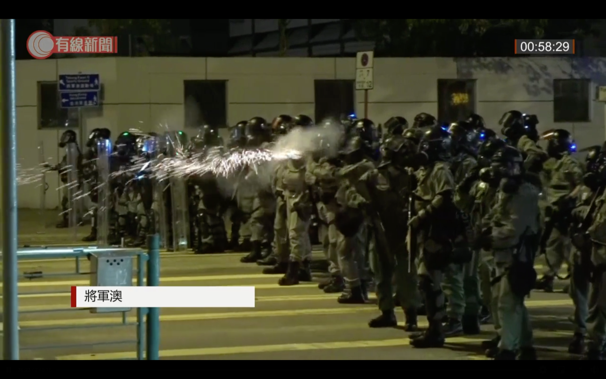

警凌晨向停車場射催淚彈、布袋彈、海綿彈
警方在11月4日凌晨12時40分至56分期間，向尚德停車場地面方向發射催淚彈驅散；在約12時56分向停車場2、3樓發射布袋彈及海綿彈各一發。凌晨約1時，再有防暴警員向尚德停車場方向發射至少5枚催淚彈，當中3發在11月4日凌晨1時8分至9分發射。

相關報道：
梓樂墮樓前後 警證曾向尚德停車場發催淚彈
女警認落彈位置靠粗略估計 兩警開槍後無看錶 官批掌握時間唔準確
HKCNEWS